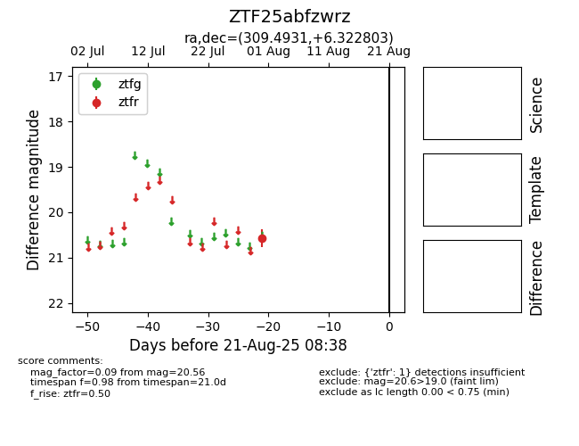

Target ZTF25abfzwrz at 2025-08-21 08:38, see:
FINK: fink-portal.org/ZTF25abfzwrz
Lasair: lasair-ztf.lsst.ac.uk/objects/ZTF25abfzwrz
ALeRCE: alerce.online/object/ZTF25abfzwrz
alt names
ZTF25abfzwrz (ztf,alerce)
coordinates:
equatorial (ra, dec) = (309.4931,+6.32280)
galactic (l, b) = (51.6583,-20.26257)
photometry
last ztfr=20.56
1 ztfr detections
